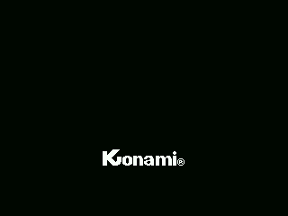

INIT gets the machine ready and stops at a jr $ (0x40AD) it never leaves. The only thing running from then on is the H.KEYI hook, that is 0x402B, once per frame.
And inside that hook the order matters:
402B in a,(099h) reading VDP status drops the request
402E call SUENA the sound, BEFORE the lock
4031 ld a,(0E005h) 0xE005 is the lock
or a / ret nz if it is not zero, no second entry
4038 ld (hl),a / ei the lock is set and interrupts are openedThe sound goes before the lock on purpose: a game step can last more than one frame, and the music has to keep playing over it. And interrupts are opened inside the interrupt, with the lock already set, so that the next one comes in, touches the sound and leaves without trampling the step still in progress.
DESPACHA (0x4050) does not keep its table apart. It does a pop hl —which does not undo the call, it takes the return address to use as a base—, adds the index doubled, reads the word and ends in jp (hl). That is why the table sits right behind the call, and why it is never returned to.
There are two:
| where | entries | index | |
|---|---|---|---|
| 0x46AD | 15 words | (0xE000) | the game state |
| 0x516F | 8 words | (0xE003) and 7 | the in-game submode |
Ending in jp (hl) instead of a call has a consequence: the ret of the dispatched routine does not go back to the dispatcher, it goes back to whatever the caller left on the stack. 0x4691 exploits that by doing a push hl with the address of another routine before dispatching. That is what makes 0x488B and 0x49EA run without anyone calling them.
The state lives in 0xE000, and almost every routine ends in the same pair of lines: 0x4742 puts A into 0xE004 —the timer— and falls into 0x4745, which bumps 0xE000. The ones that wait check 0xE004 with dec (hl) / ret nz.
| 00 | uploads the VDP registers and gets the screen up |
| 01 | raises the big KONAMI one row every two frames |
| 02, 03, 05 | waits |
| 04 | clears and builds the title screen |
| 06 | builds the PLAY SELECT menu |
| 07 | waits for a choice |
| 08 | the attract demo |
| 09 | takes a life off and announces whose turn it is |
| 10 | clears the announcement and lets the player go |
| 11 | the game; it stays here until 0xE06F goes off |
| 12 | checks whether the active player has lives left |
| 13 | changes turns |
| 14 | end of game, unless the other player is still alive |
08 is the odd one: it is the only one entered without a push, so its ret goes back to the caller instead of to the dispatcher.

State 01. SUBE_LOGOTIPO (0x4CBF) raises the KONAMI from the bottom up, one row of 32 bytes per call, and draws it split in three: three tiles on top, eleven in the middle and twelve below.
Inside a game step, the table at 0x516F is indexed with the frame counter and
turns, one per frame, because they do not all fit in the same one.
| 0 | swaps buffers and uploads the terrain to the screen |
| 1 | the twin of 0 for the top half |
| 2 and 6 | the engine flame, and then move the flying things |
| 3 | burns fuel |
| 4 | moves the flying things, without touching the flame |
| 5 | releases what the terrain shoots |
| 7 | the difficulty |
4 is the only one of the eight that does not enter at the start of a routine: it points at 0x5278, three instructions further into 2, right after the call that moves the engine flame. The same routine does two different jobs depending on where you come in.
The stage's terrain is built whole in RAM when the game starts (MONTA_EL_MAPA, 0x4106), and it is built double-buffered: 0xE50D flips between 0 and 1 with a xor 1, and the page comes out of that, 0xE800 with 0 and 0xEA00 with 1. While one is being dumped to video memory, the other is being built.
Scrolling it one column is five batches of 0x1F bytes, each shifted by one place (0x532F). Five rows, and 0x20 bytes between rows: one column top to bottom.
What gets laid into the buffer comes from a recipe (0x45E5): one byte per stretch, the low two bits say what class it is and the rest says where it goes.
0x412B copies seven bytes from 0x41DD to 0xE5F8 and calls them as a routine from then on. Set up over there, they are:
E5F8 32 FD E5 ld (0E5FDh),a
E5FB DD 70 00 ld (ix+000h),b
E5FE C9 ret0xE5FD is the third byte of the ld (ix+000h),b, that is, its own displacement. The routine writes the displacement over itself with A and then stores B: it is ld (IX+A),B, which the Z80 cannot do, because IX's displacement is a fixed byte of the opcode and not a register.
That is why it has to run in RAM, and why those are the only seven bytes of this cartridge that do not run from ROM.
HAY_CHOQUE (0x53DC) is one single test for everything: it subtracts the other one's position and its width, adds its own width, and if that does not overflow, they do not touch on that axis. The same on the other axis, and there is a collision only if they overlap on both. The sizes always come in (HL), and each thing brings its own table:
| 0x5607 | the flying things, four bytes per zone class |
| 0x55D3 | the bomb against the terrain, per tile family |
| 0x55E3 | the bomb, per attribute drawing |
| 0x55F3 | the shot, per attribute drawing |
| 0x5634 | tiles 0x87 and up, which take more than one cell |
| 0x5648 | the fuel dump at the end of the zone |
| 0x564C | the base |
Every frame three checks are chained (0x5139) and as soon as one sets carry the rest are skipped. Between columns 0x99 and 0xA1 none of them is checked: that is the stage change.